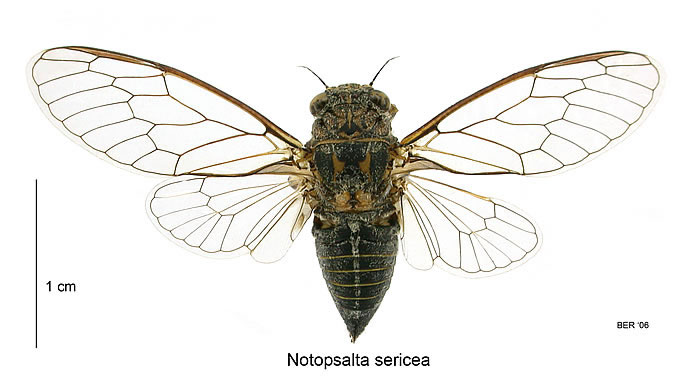
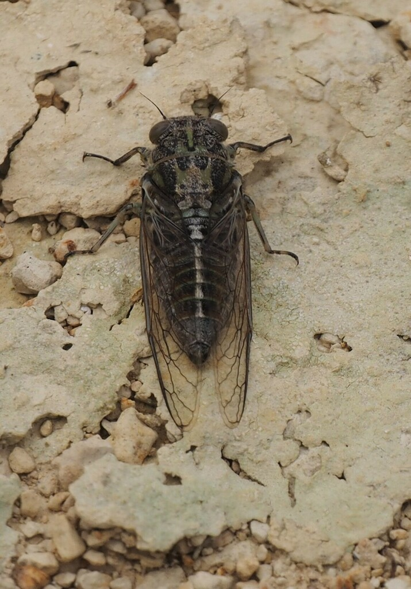
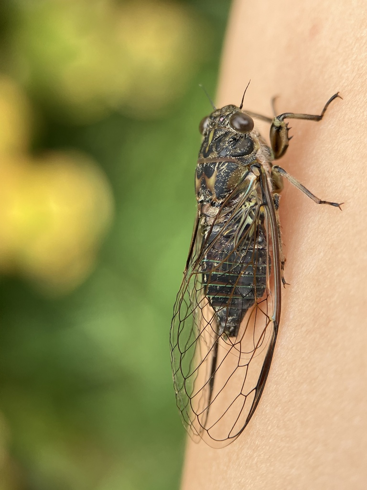
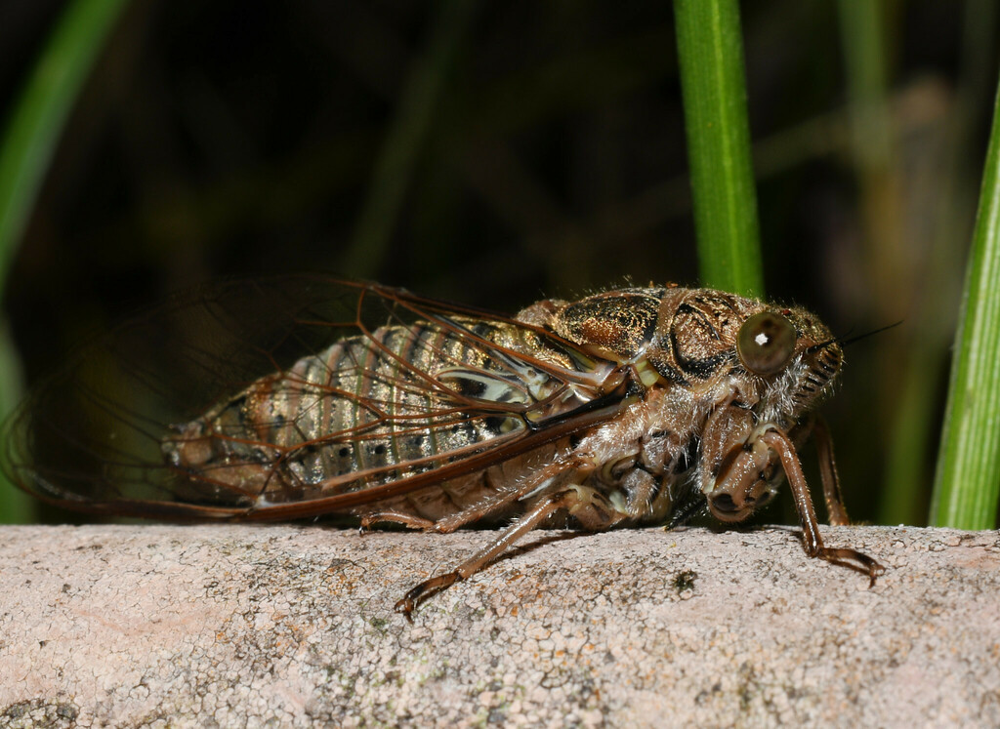
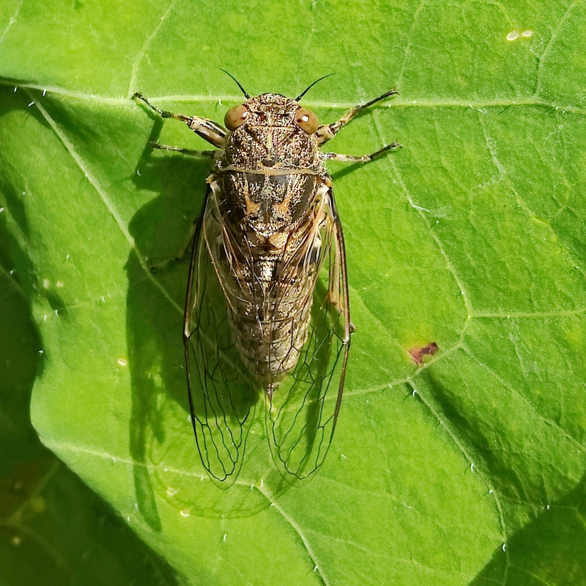
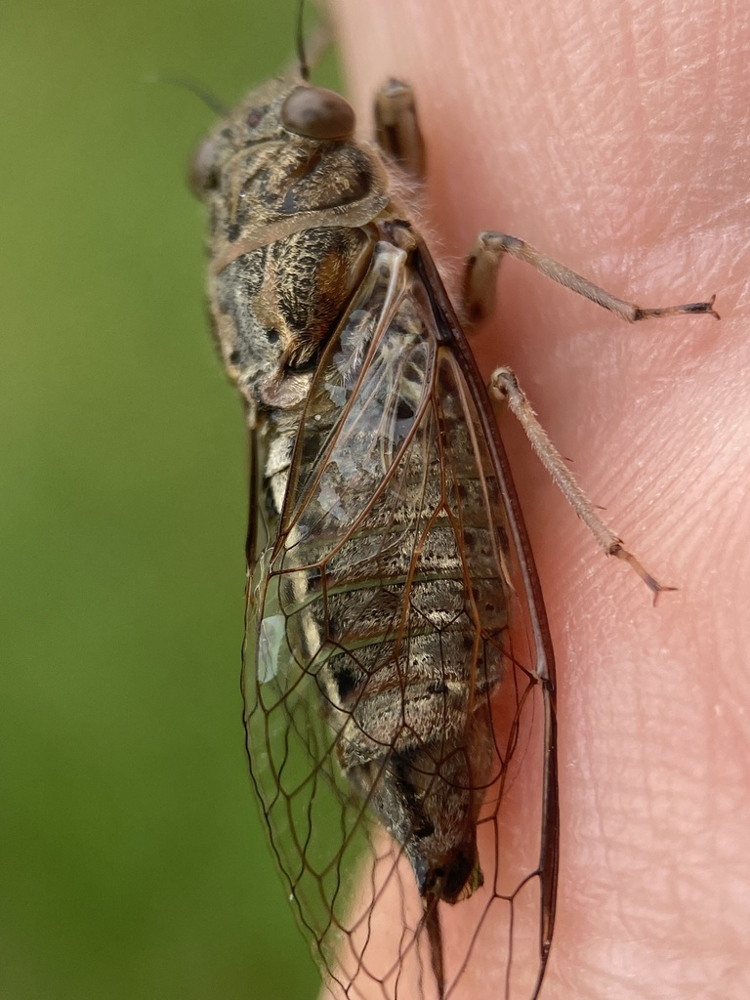
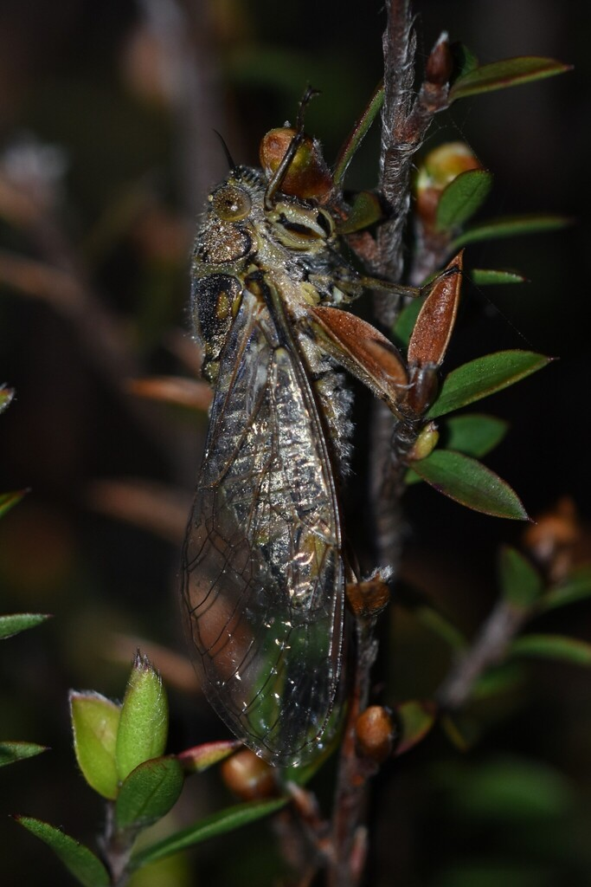
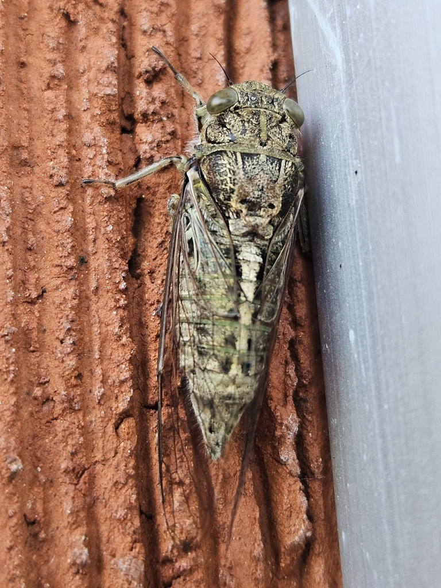
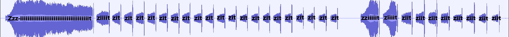

Dino's New Zealand Cicada Guide
Te Aratohu a Dino mō ngā Tātarakihi o Aotearoa

Notopsalta sericea - Clay Bank Cicada
This species a larger wing length in comparison to its body compared to individuals from Maoricicada.
Closer Look
Notopsalta sericea has no bends in its forewing [1] costa [2], and the pterostigma [3] is not transparent. Females of Notopsalta sericea have a slightly larger wingspan compared to the males, with 41-46mm in female individuals and 33-40mm in male individuals. [4] The R crossveins [5] in the forewing are transparent.the collar of the species' pronotum [6] is extended outward laterally [7] . Their body colour is usually primarily black, in both females and males, and is usually less than 19mm. The underside of the abdominal segments have a vertical line of darker colouration along the midline.
Specimens
Dorsal specimen photo, taken from the archived [8] cicada page of Landcare Research.

Disclaimer: The below identification details for each species will have come through from various archived and unavaliable sites, alongside my personal observations and knowledge. I have searched around many different sources, and had to jump through many hoops, in order to collect all this information. Ergo, I want to properly credit the source of the information, even if most of it is no longer avaliable to the general public, who has a simple passing interest in these species. My website aims to make this information avaliable to the general public. That's also why I define each scientific term. A huge thank you to those who so happened to save the old cicada websites on Internet Archive, as this wouldn't be possible without them.
Colour Morphs
Descriptors for this species vary, from blacks to olive tinges to browns. Similar to Amphipsalta, there's a vertical line on this species' pronotum. There is also a white vertical line which trails down the centre of the abdominal segments. They have white-grey hairs all over their body, making them look ashy coloured.






Call
Here is the call produced by males of the Notopsalta sericea species, and a visualiser of the call with onomatopoeia I use to identify it.
The source of the above audio clip is from the archived Hydrodictyon NZ Cicada Species page [9] .

Zzz-iiiiiiiiiiiiiiiiiiiiiiiiiiiiiiiiiiiiit ziiiit zit zit zit zit zit zit zit zit zit zit zit zit zit zit zit zit zit zit zit zit zit zit zit -- zziiiiit ziiiit ziit ziit ziit ziit ziit ziit ziit ziit
Distribution
These cicadas can be found in the North Island, though prefer lowlands and coastal areas. [4] [10]

-
The first wing, also referred to as the anterior wing.
back
-
The costa is the thick leading edge of an insect's wings.
back
-
The pterostigma is a specialised area in some insect species, including cicadas. It is attached to the costa near the tip of the wing. It helps in gliding, being heavier than the rest of the wing.
back

-
Te Papa Museum - Kihikihi Cicadas and Their Sounds - Notopsalta
back
-
Using the Comstock-Needham system used for naming insect wing veins, R represents "Radius", and in cicadas, represents the crossveins (circled in red) for the sections labelled R4 and R23 here:
back

-
The pronotum is the first segment of an insect's body after the head.
back
-
Images taken from the Lucidcentral NZ cicadas page - example of the collar's lack of extension in the Rhodopsalta genus (first image) and lateral extension in the Kikihia genus (second image).
back

-
Larivière, M.-C.; Rhode, B.E.; Larochelle, A. 2006 (and updates): New Zealand Cicadas (Hemiptera: Cicadidae): A virtual identification guide. The New Zealand Hemiptera Website, NZHW 05. Archived.
back
-
Archived Hydrodictyon NZ Cicada Species Page
back
-
Auchenorrhyncha (Insecta: Hemiptera): catalogue. Fauna of New Zealand 63, Lariviere, M.-C.; Fletcher, M.J.; Larochelle, A. 2010.
back